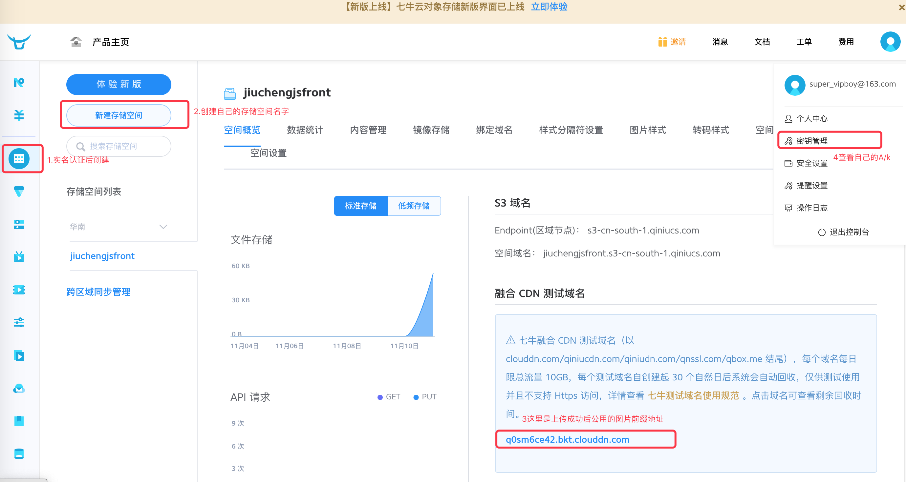
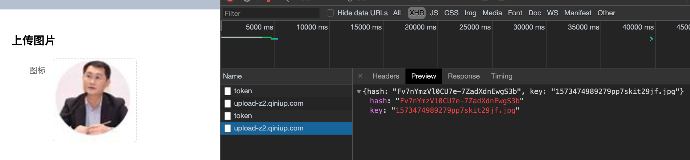
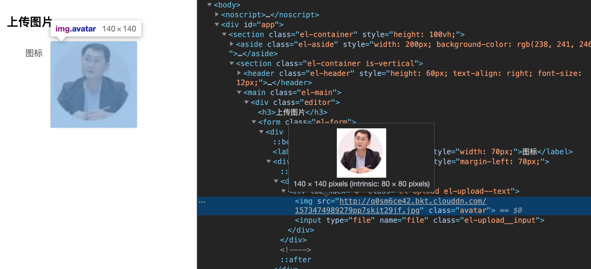

下面介绍Element-ui中Upload组件如何把图片上传的七牛云(免费版本，有流量限制)
一、准备工作
1.去七牛云注册账号，并实名认证，不认证无法创建存储空间

2.了解Element-ui组件
二、创建上传页面(这里直接使用官方的代码片段)
<template>
<div class="editor">
<h3>上传图片</h3>
<el-form label-width="70px" @submit.native.prevent="save">
<el-form-item label="图标">
<el-upload
class="avatar-uploader"
:action="qiniuDomain"
:http-request="upLoadToQiniu"
:show-file-list="false"
:before-upload="beforeUpload"
>
<img v-if="model.icon" :src="model.icon" class="avatar" />
<i v-else class="el-icon-plus avatar-uploader-icon"></i>
</el-upload>
</el-form-item>
</el-form>
</div>
</template>
<script>
export default {
data() {
return {
// 实名认证后创建的存储空间对应的上传地址(华东，华南等等不一样：https://developer.qiniu.com/kodo/manual/1671/region-endpoint)
qiniuDomain: "https://upload-z2.qiniup.com",
// 创建成功后官方随机分配的公开图片地址前缀，即上传成功后对应的公用图片地址前缀
qiniuViewHost: "http://q0sm6ce42.bkt.clouddn.com",
model: {
name: "",
icon: ""
}
};
},
methods: {
async upLoadToQiniu(req) {
const config = {
headers: { "Content-Type": "multipart/form-data" }
};
let fileType = "";
if (req.file.type === "image/png") {
fileType = "png";
} else {
fileType = "jpg";
}
// 重命名要上传的文件
const keyname = `${new Date().getTime()}${Math.random().toString(36).slice(2)}.${fileType}`;
// 上传时候的Token,可前端自己生成,安全起见后端生成！
// 这里是express后端生成的Token
const res = await this.$http.get("/token");
const token = res.data.uploadToken;
const formdata = new FormData();
formdata.append("file", req.file);
formdata.append("token", token);
formdata.append("key", keyname);
const result = await this.$http.post(this.qiniuDomain, formdata, config);
this.model.icon = `${this.qiniuViewHost}/${result.data.key}`;
},
beforeUpload(file) {
// debugger
const isJPG = file.type === "image/jpeg" || file.type === "image/png";
const isLt10M = file.size / 1024 / 1024 < 10;
if (!isJPG) {
this.$message({
showClose: true,
message: "上传图片只能是JPG/PNG 格式!",
type: "error"
});
}
if (!isLt10M) {
this.$message({
showClose: true,
message: "上传头像图片大小不能超过 10MB!",
type: "error"
});
}
return isJPG && isLt10M;
},
},
created() {
// 其他ajax
}
};
</script>
三、上传凭证（Token）如何获得：https://developer.qiniu.com/kodo/manual/1208/upload-token
// 七牛云官方node.js CDK
const qiniu = require('qiniu');
const config = {
// 个人中心->秘钥管理->AccessKey
"AK": "xxxxxx你自己的",
// 个人中心->秘钥管理->SecretKey
"SK": "xxxxxx你自己的",
// 对象存储->新建存储空间的名字：(你自己创建时候空间名字)，这里我创建的是：jiuchengjsfront
"Bucket": "jiuchengjsfront"
}
// 这里是根据express定义的接口返回给客户端的:token
app.get('/admin/api/token', async(req, res)=> {
const mac = new qiniu.auth.digest.Mac(config.AK, config.SK);
const options = {
scope: config.Bucket,
expires: 3600 * 24
};
const putPolicy = new qiniu.rs.PutPolicy(options);
const uploadToken= putPolicy.uploadToken(mac);
res.send({
uploadToken
})
})也可以不从接口获取，自己定义成功的方法。安全起见别暴露给别人
// 七牛云官方node.js CDK
const qiniu = require('qiniu');
const config = {
// 个人中心->秘钥管理->AccessKey
"AK": "你自己的Accesskey",
// 个人中心->秘钥管理->SecretKey
"SK": "你自己的Secretkey",
// 对象存储->新建存储空间的名字：(你自己创建时候空间名字)
"Bucket": "jiuchengjsfront"
}
// 官方文档：https://developer.qiniu.com/kodo/manual/1208/upload-token
const mac = new qiniu.auth.digest.Mac(config.AK, config.SK);
const options = {
scope: config.Bucket,
expires: 3600 * 24
};
const putPolicy = new qiniu.rs.PutPolicy(options);
const uploadToken = putPolicy.uploadToken(mac);
export default uploadToken
// 使用的时候替换为const result = await this.$http.post(this.qiniuDomain, formdata, config);
this.model.icon = `${this.qiniuViewHost}/${result.data.key}`;四、上传成功之后如：

